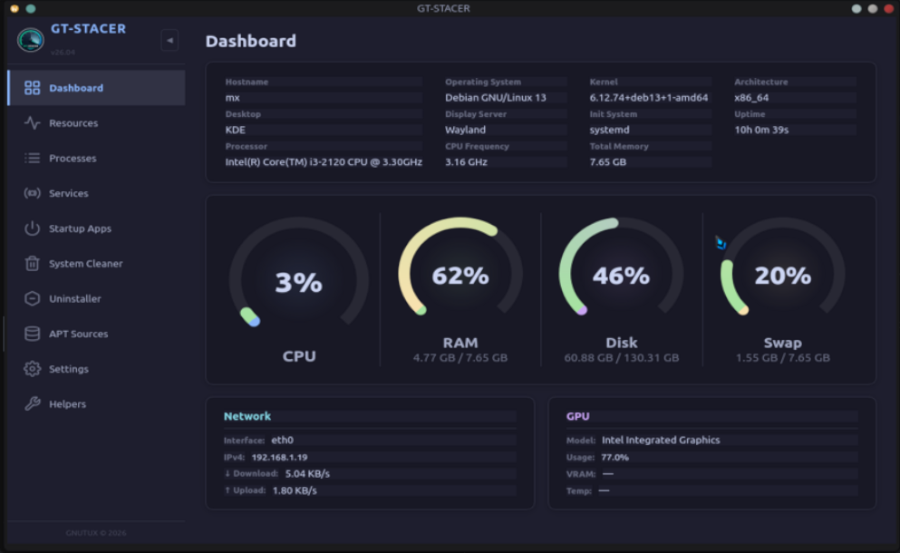

A modern fork of Stacer, rebuilt with Qt6 & C++17 for GNU/Linux 2026. Monitor, clean, and manage your system with a beautiful unified interface.
A complete overhaul with modern tooling, broader hardware support, and a refined user experience.
Browse through the interface — screenshots update based on your selected language.

Dashboard
See how far we've come since the original Stacer 1.1.0 (2019).
Choose your package format. SHA256 checksums included for verification.
All downloads are from the 26.06 STABLE GitHub release. Verify the SHA256 sums against the page on GitHub Releases.
A rolling plan — feedback and pull requests welcome.
For the full history, see the CHANGELOG.md on GitHub.